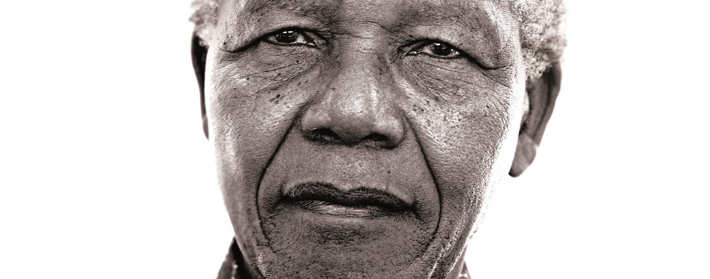

Nelson Rolihlahla Mandela | 18/07/1918 - 05/12/2013
History about Mandela:
Nelson Rolihlahla Mandela ( – ) was a South African anti-apartheid revolutionary, political leader, and philanthropist, who served as President of South Africa from to . He was the country's first black head of state and the first elected in a fully representative democratic election. His government focused on dismantling the legacy of apartheid by tackling institutionalised racism and fostering racial reconciliation. Ideologically an African nationalist and socialist, he served as President of the African National Congress (ANC) party from to s.
“What counts in life is not the mere fact that we have lived. It is what difference we have made to the lives of others that will determine the significance of the life we lead.” - Nelson Mandela
Nelson's Timeline:
Nelson Rolihlahla Mandela is born
His father dies and he is taken to be raised by the Acting King of the Thembu people
Undergoes initiation; enrols at Clarkebury Boarding Institute at Engcobo
Enrols at Healdtown, the Wesleyan College at Fort Beaufort
Enrols at the University of Fort Hare in Alice
Is expelled from the University of Fort Hare
Runs away to Johannesburg
Completes his BA through Unisa
Enrols for an LLB at Wits University
Co-founds the ANC Youth League; marries Evelyn Mase
Is elected National Secretary of the ANC Youth League
Is elected President of the ANC Youth League
Is Volunteer-in-Chief of the Defiance Campaign; is sentenced to nine months in prison suspended for two years with 19 others for their role in the campaign; is banned for the first time; is asked to leave Wits over unpaid debt; starts South Africa’s first black law firm, Mandela Tambo
Watches in secret as the Freedom Charter is adopted in Kliptown
Is arrested and charged with high treason with 155 others
Divorces Evelyn Mase and marries Winnie Madikizela
ANC and PAC are banned after the Sharpeville Massacre
Is acquitted in Treason Trial; goes underground; calls on Verwoerd to set up talks on a non-racial future for South Africa; calls for a three-day strike in May over South Africa becoming a republic; is selected as Commander-in-Chief of Umkhonto weSizwe
Secretly leaves the country for military training and to get support for the armed struggle; arrested on 5 August; sentenced to five years in prison for leaving the country without a passport and encouraging the strike
Joins 10 others on trial for sabotage in the Rivonia Trial
Sentenced with seven others to life imprisonment
Starts meeting with the government to persuade them to talk to the ANC
Graduates with an LLB from Unisa
Released from Victor Verster Prison; leads ANC delegation in talks with the government
Is jointly awarded the Nobel Peace Prize with FW de Klerk for their efforts to end apartheid
Votes in South Africa’s first democratic election; is inaugurated as President; his autobiography, Long Walk to Freedom, is published
Starts the Nelson Mandela Children’s Fund and donates to it a third of his presidential salary
Steps down after only one term as president; starts the Nelson Mandela Foundation
Starts the 46664 campaign to highlight HIV and AIDS; starts the Mandela Rhodes Foundation to build leadership in Africa